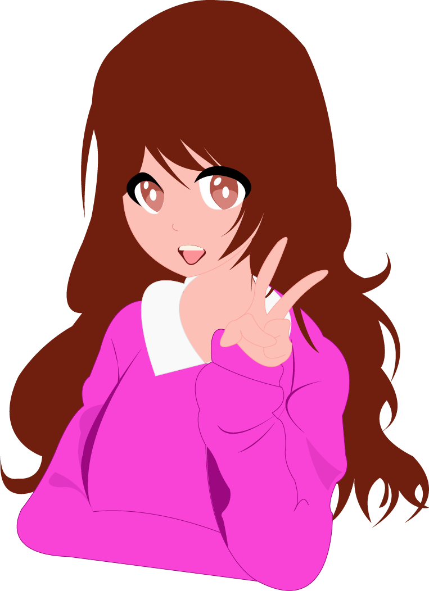
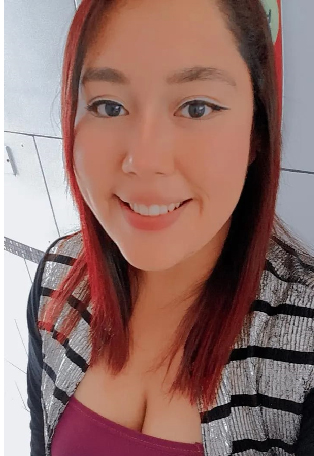

Alma Rosmery Ascencio Martinez
Yo naci el 4 de ferbrero del 2001 en ese año huvo un terremoto muy fuerte
yo estaba por nacer, cuando paso a mi madre junto a muchos pasientes mas los
sacaron al estaciomiento para evitar que sucediera una catastrofe, asi naci yo
una chica un poco extrivertida actualmente tengo 22 años de edad soy estudiante
universitria, mi familia no a tenido una economia muy estable y mi padre con los años
su salud a empeorando con los años los gastos van aumentando por lo que he
trabajado desde los 17 años empeze en una pequeña vente de medicina, al pasar
el tiempo eso fue creciendo asta tener dos cursales de las cuales yo era la
encargada de administracion, venta, entre otras cosas solo estaba yo y otro joven,

Trabaje hay años 5 asta cumplis 21 recien cumpli años deje de trabajar hay y entre
a una distribuidora de verduras y frutas siempre en el cargo de adminitracion y ventas
ya que es algo que se me da muy bien al no tener pena de hablar con los clientes, afinales
de ese año llego un muchacho que me ayudaria con el trabajo por lo que me permitio poder
aceptar otro un trabajo de temporada en almacenes siman, al cual yo iba solo 2 dias a la
sin interferir con mi trabajo actual, gracia a Dios el peronal de recuersos humanos de hay
quedo satisfecho con mi trabajo de tal manera que al finalizar la temporada me remitieron
para trabar unos dias en la marca Adan & Eva mientras no iniciaban la clases de este año,
el trabajo consistia en promociar dichas bebidas en diferentes puntos solo por el mes de enero
de igual manera en mi trabajo actual nos toco mudar las oficinas a nejapa lo que me dificulat
un poco por que por el trasporte asta aya el trabajo se caraga mas, actaulmente tambien soy
becada por la alcaldia de sanata ana que me ayuda con algunos gastos de mis estudios, pero tambien
cada año me piden cumplir con 200 horas sociales las cuales se me dificulta algunas veces cumplir,
mas mis estudios de este año tiene un poco mas de complicacion, asi que esto es un resumen de mi vida
a tansolo mis 22 años.
1) Estudios Realizados
- Educacion Primaria:
- Comenze a los 4 años de edad
- Estudie en el Quinder Federico vides
- Esta ubicado a un costado del parque menendes
- Estudie hay asta salir de quinder 6

2) Estudios Basicos
- Educacion Basica:
- Comenze Primer grado de 7 años de edad
- Estudie en el Centro Escolar Napoleon Rios
- Esta ubicado de igual manero a un costado del parque menendes
- Estudie por en el turno de la mañana
- El turno matutino era solo de señoritas
- Hay termine todos mis estudios basicos graduandome de 9° grado
3) Estudios Bachiller
- Bachillerato:
- Comenze 1° año de 16 años de edad
- Estudie en el colegio Hosanna
- Esta ubicado a un costado de la terminal de los buses de la 55
- Estedie un tecnico en desarrollo de sofware
- Era un bachillerato de 3 años
- Culmine mis estudios en el año 2019 graduandome como bachiller
4) Estudios superiores
- Educacion Universitaria:
- Comenze 1° año en el año 2020 en la Universidad UNASA
- Escogi la carrera de Diseño Grafico Multimedia
- Mi primer año de estudio fue cuando entramos en pandemia
- Esta carrera es semipresencial lo que me permite poder otras actividades
- Devido a la carrera he podido parcipar en concursos de cortrometajes
- Cada año se hacen diversas actividades para los estidiantes de la carrera
- Actualmente estoy cursando mi 4° año de la carrera